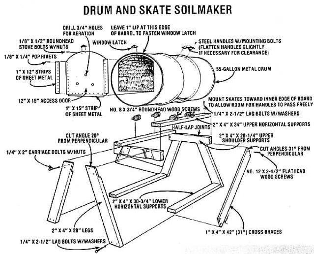
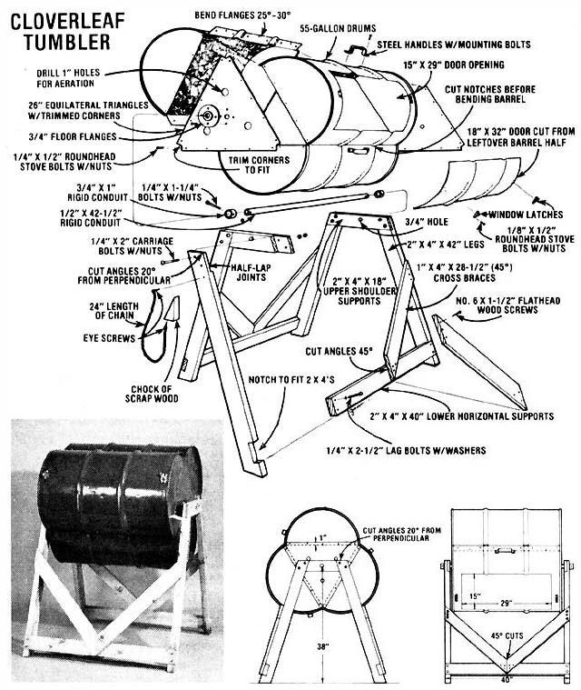
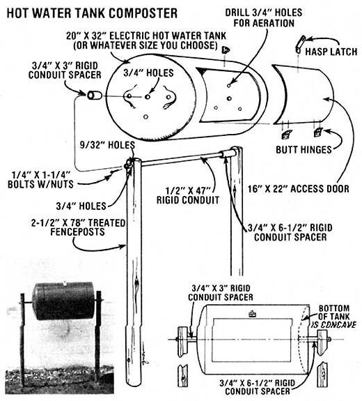
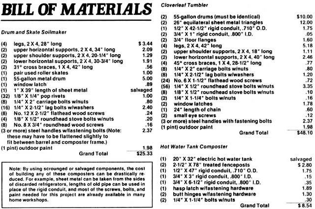

If there's one thing that most avid gardeners will agree upon, it's this: Compost is unequaled as a soil conditioner and en-richer. The wonderful substance fertilizes, aerates, and adds valuable humus to the soil... and, best of all, it's free!
Yet many "tillers of the soil" avoid making and using this organic elixir at all ... because of the labor, care, and nurturing that is traditionally involved with maintaining a compost heap. Still other gardeners build elaborate compost bins, fill them, and then fret over the decomposing mounds like a hen over her chicks.
It's unfortunate that such an intimidating mystique has developed around such a basic substance. Compost is, after all, simply decayed organic matter, and all of the complicated techniques, recipes, and procedures that have been developed merely help Mother Nature do her job a little faster, and with less unpleasant odor. The fact is, you can have these advantages and simplicity, too ... with a homemade rotating composter barrel!
You've no doubt seen these composting drums advertised-and they are high-quality, "last a lifetime" units-but the commercial models usually carry a price tag of $225 or more! That's precisely why MOTHER'S researchers have developed three different build-'em-yourself compost tumblers that [1] are not only every bit as good as the commercial ones, but [2] can be constructed in an hour or two ... for as little as $8.54! Furthermore, you won't need a lot of fancy tools to build any one of these nifty tumblers. In fact, you can get along just fine with a handsaw, a power drill, an electric saber saw, a screwdriver, and a pair of pliers. The only thing you might want to purchase is a pop rivet tool, and you can even "work around" this item by merely bolting certain components together.
If you take a look at the photos and illustrations in this article, you'll see that these homemade revolving compost bins are not at all complex. In fact, regardless of the type you decide to build, there are only three basic parts: [1] the drum that holds the decomposing material, [2] a loading/unloading door on this drum, and [3] a stand to keep the whole shebang at a convenient level and to provide clearance for the drum to rotate. We've worked up three designs so that you'll be able to tailor your equipment to fill your own composting needs.
The simplest rotating drum composter design utilizes a standard 55-gallon barrel and a pair of steel roller skates. Start this one off by scrounging or buying a dent-free and nonrusted drum, then cut an access door into one end of this barrel (as shown in the illustration), using a saber saw equipped with a metal-cutting blade. (Be certain to leave the 1" sheet metal "lip" at the rounded edge of the container intact.)
If the barrel you've chosen has been. used to hold petroleum products or other substances that could destroy the value of the finished compost, this would be the time to take the drum outdoors and build a blazing fire inside it. The heat will effectively remove any residue that's left in the container.
Next, take the "door" you've just cut out of the drum and fasten-with either pop rivets or bolts-a 1" strip of thin flat stock or sheet metal to the interior side of its bottom edge (the side opposite the curved part of the hatch). Then attach two more cut-to-length strips of metal to the outside surface of the door, one at either side. To hold the door securely in place, mount a window-sash lock on its rounded edge, and fasten the "catch" part of the lock to the lip at the edge of the barrel.
Now you're ready to make the wooden frame that the barrel rests upon. First, saw the 2" X 4" legs and supports to the dimensions shown in the drawings, cut the indicated angles on the legs and cross braces, and rout out the four half-lap joints as illustrated. Make these joints secure with carriage bolts, and then go on to fasten the lower and upper horizontal supports to the frame's legs and shoulders with lag bolts. To provide a sturdy base and prevent the stand from "rocking", attach the two 1" X 4" cross braces to the legs as indicated.
The rest is easy: Disassemble a set of steel-wheeled roller skates-leaving four separate pairs of wheels-and then mount each pair on the upper horizontal supports so that the drum's two "ribs" can act as tracks and run exactly between the wheels in each pair of skates. (Be sure to position the wheels toward the inside edges of the boards so there is about an inch between the drum and each upper horizontal support ... this will leave enough clearance for the handles, which can be installed in three or four evenly spaced positions around the center circumference of the barrel.)
Finally, drill a couple of 3/4" holes in each end of your drum for air circulation, paint the stand and barrel the color of your choice (remember, a dark color will absorb the sun's heat, which will aid in the composting process), and set the drum in place on the roller-skate wheels. That's all there is to it ... just fill 'er up, and compost away!
If you need a large-capacity compost maker, whip together this hefty tumbler made from two 55-gallon drums (yes, this is a variation of the design that Joe and Helen Horfmann of Silex, Missouri told us about in MOTHER NO. 48, page 8).
The two barrels used for this project will need to be of the same dimensions, so-since diameter, rib spacing, and height vary a great deal from one manufacturer to the next-be certain the two you choose are identical.
Once you've found a matched pair of rust-free, undamaged containers, use a saber saw to open one of the drums- lengthwise-on three of its sides: In other words, cut the container almost in half by slicing its top, one side, and its bottom ... but leave the fourth side intact. Then saw a small notch out of each rib on the uncut side, and "open" the drum like a suitcase (you might have to "persuade" the metal to bend in the direction you want by tapping it with a hammer).
Next, cut the second barrel lengthwise into two parts, being sure to leave two metal flanges-as shown in the drawing -on one of the newly formed "half-barrels". Now, fold back the flanges 25°-30°, insert the flanges of the half-barrel under the cut sides of the opened drum, drill the holes as shown, and bolt the two components together.
Once those pieces are fastened, cut (or have your local sheet metal shop cut for you) two 26" equilateral sheet-metal triangles, and trim off the points so the pieces will fit snugly over the openings in the ends of the drum assembly. Drill a series of 9/32" holes, as illustrated, through the triangles and the barrel ends ... then fasten these components together with 1/4" X 1/2" roundhead bolts and nuts.
With this done, drill a 3/4" hole in the exact center of both ends, then reinforce each of these holes by bolting a 3/4" floor flange directly over it. The flange will provide support for the 1/2" X 42-1/2" section of electrical conduit that will serve as the composter's "axle". You can also take this opportunity to drill several 1" ventilation holes in each end of the container.
Next, cut a 15" X 29" hatch in the side of any one of the container's three clover-leaf sections, and-using the remaining half of the second barrel-fashion a covering for this hole (make sure this "door" has at least a 1-1/2" overlap all around its perimeter so that the opening will be well sealed). Fasten the door to the composter with a pair of window latches, mounted one at each end. Then attach the handles (at least one to each "cloverleaf"), and, finally, cover the entire barrel assembly with a coat of dark paint.
The stand that supports the drums is constructed of 2 X 4's bolted together as shown in the illustrations . . . with the upper horizontal supports joining the four legs in half-lap joints, and the lower supports set into notches cut out of the legs. The ends of the four 1" X 4" cross braces are then cut at 45° and the braces are screwed in place between the legs and lower supports. When the stand is assembled, you can either seal it from the weather or give it a good coat of paint.
With the barrel stand completed, drill two 3/4" holes in the upper horizontal supports, set the barrel assembly temporarily up on milk cases or cinder blocks so that the holes in the wooden frame are aligned with the openings in the two floor flanges, and run your section of electrical conduit through the frame and the barrel assembly ... forming an axle which will simultaneously support the composter and allow it to rotate. Hold the conduit axle in place with two short lengths of 3/4" conduit (which is slightly larger in diameter than the axle) slipped over the outer ends of the axle and bolted securely through pre-drilled holes.
For convenience, you may choose to salvage a wedge-shaped scrap of wood from one of the 2 X 4's and hang it with a short length of chain from one side of the composter frame ... to be used as a "chock" to prevent the drum from rotating during the loading or unloading process.
Discarded water heating tanks are a widely overlooked-but very useful-source of raw material for many do-it-yourself projects, including this sturdy composter. Select a structurally sound electric hot water tank from your local landfill or scrap yard, then cut (with an industrial-duty saber saw or an acetylene cutting torch) a rectangular access door into the side of the tank.
Next, weld or bolt a set of heavy-duty butt hinges between one side of the door and the tank, and fasten a hasp latch to the door's other side to keep it secure. With this done, drill or cut a 3/4" hole in each end (the former top and bottom) of the tank, and insert a length of 1/2" rigid conduit through the holes so that about 8" of tubing protrudes from each of the container's ends. (Of course, the length of the conduit you use may differ from ours, depending on the dimensions of your particular tank.)
Then, cut two pieces of 3/4 " conduit to serve as "spacers" at either end of the tank ... preventing the edges of the container from touching the upright supports. (Note that one spacer must be longer than the other to allow for the concave "bottom" of the cylinder.)
Remove the conduit from the tank, drill some 3/4" holes in each end of the container for aeration, and cover the whole thing with a coat of good outdoor paint.
To mount your composter, set two 2-1/2"-diameter treated fenceposts into the ground-far enough apart to support the ends of the tank's "axle"-and drill a 3/4" hole through each post at a point several inches from its top. Then slip the conduit axle through one post, slide a spacer over the end of the axle, run the axle through the composter tank and the other spacer, and, finally, push the axle through the remaining post. To lock the axle in place, drill a hole through each of its ends outside the posts and fasten a 1/4" X 1-1/4" bolt through each hole. You're in business!
Once you have the rotating drum composter of your choice completed, you're ready to start harvesting all that terrific fertilizing mixture. Simply throw all your kitchen garbage, grass clippings, leaves, and other organic wastes into the barrel (avoid adding sawdust or heavy cellulose material, because these substances take a long time to break down), then give the drum a turn or two every day ... and add water (if necessary) to speed up the decomposition. Before too long, your household waste will be converted into a rich black garden tonic of the finest quality ... even better, in fact, than the compost made in a traditional bin, because all the nutrients are captured within the barrel and are not allowed to leach into the ground beneath the pile.
And-to assure a more constant supply of soil booster-you may want to build more than one of whichever design you choose ... so you can have a composter already digesting material while another is being filled.
For more information on the composting process, read The Complete Book of Composing (Rodale Press, 1960) and Everyone's Guide to Home Composting (available for $3.95 plus 95 cents shipping and handling-from Mother's Bookshelf, P.O. Box 70, Hendersonville, North Carolina 28739).
|
 |
 |
 |
|
 |
|
|